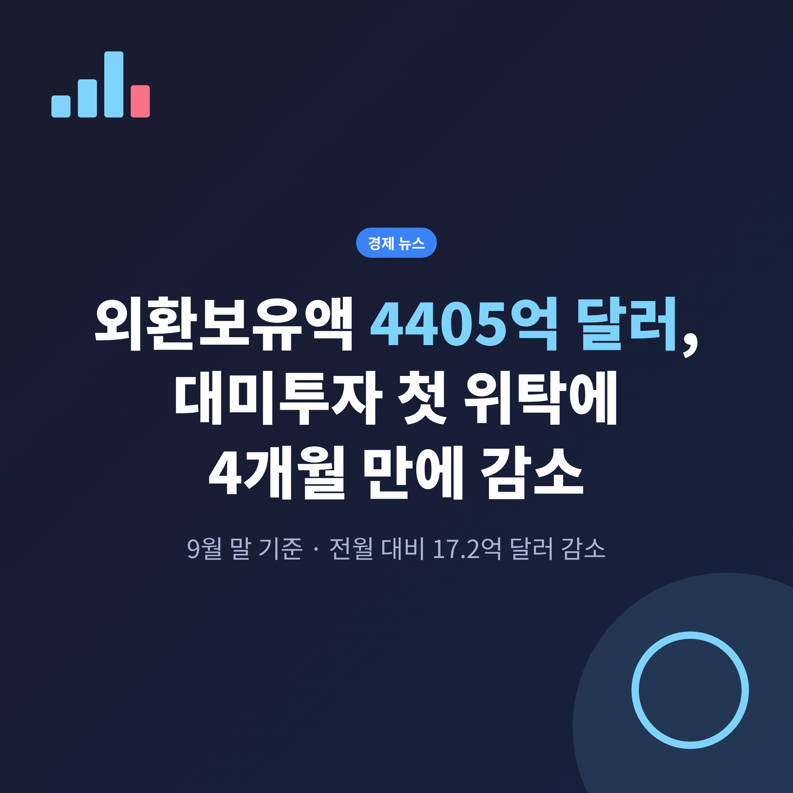
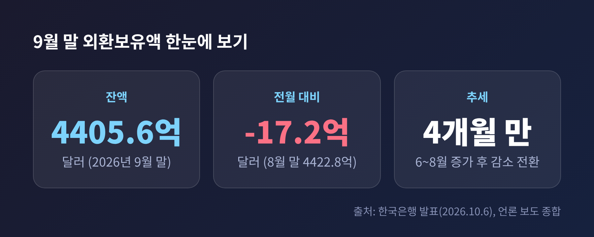
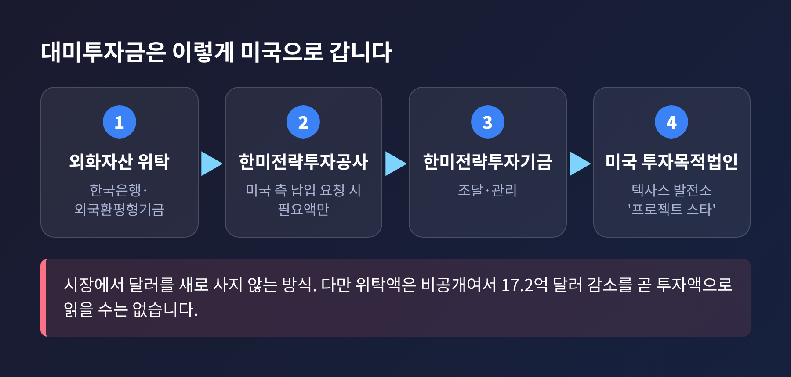
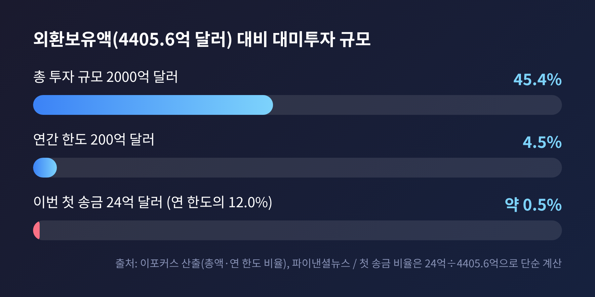
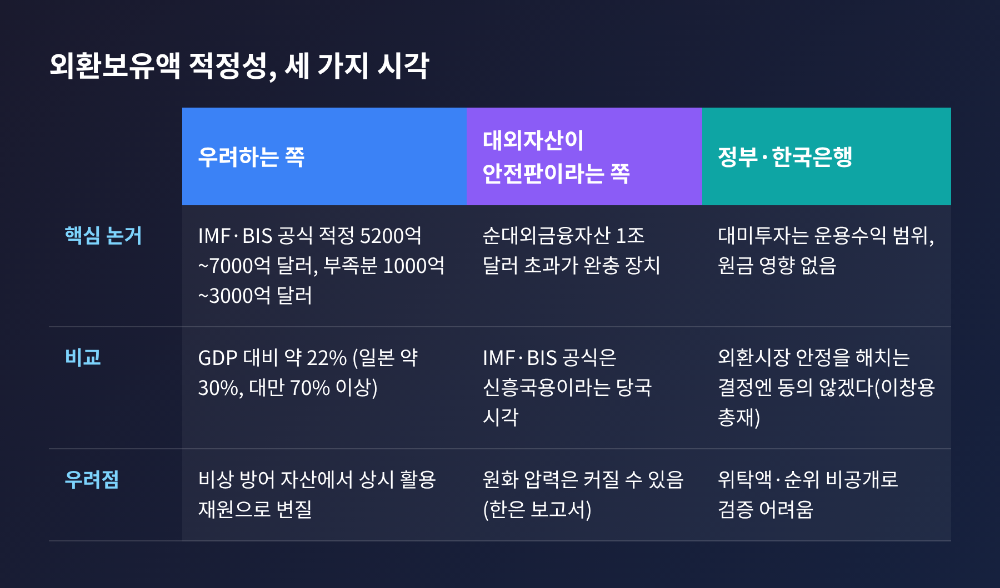
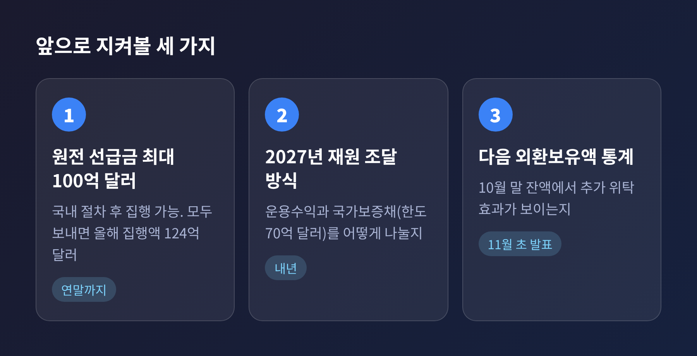

3줄 요약 1. 9월 말 외환보유액은 4405억 6000만 달러로, 한 달 새 17억 2000만 달러 줄며 넉 달 만에 감소했습니다. 2. 한국은행은 이유로 외화예수금 감소, 한미전략투자공사에 대한 자산위탁, 달러 환산액 감소를 꼽았습니다. 3. 위탁액은 공개되지 않았고 추가 위탁 일정도 미정이어서, 앞으로의 외환보유액 흐름이 쟁점입니다.
이번 글에서는 2026년 10월 6일 한국은행이 발표한 9월 말 외환보유액을 정리해 보겠습니다. 숫자 자체는 작은 변화이지만, 그 안에 대미투자 첫 집행이라는 큰 사안이 들어 있습니다. 무슨 일이 있었는지, 왜 논쟁이 되는지, 앞으로 무엇을 지켜봐야 하는지를 차례로 짚습니다.
한국은행 발표에 따르면 2026년 9월 말 외환보유액은 4405억 6000만 달러입니다. 8월 말 4422억 8000만 달러보다 17억 2000만 달러 줄었습니다. 6월부터 8월까지 석 달 연속 늘다가 넉 달 만에 감소로 돌아선 것입니다.

한국은행은 운용수익이 있었는데도 줄어든 이유를 세 가지로 설명했습니다.
세 번째 항목은 달러 강세와 관련이 있습니다. 9월 중 달러지수는 99.70에서 101.37로 1.7% 올랐습니다. 유로화는 2.1%, 파운드화는 2.3%, 호주달러는 2.4% 약세였습니다. 달러가 강해지면 유로나 파운드 등으로 보유한 자산을 달러로 바꿔 셈할 때 금액이 줄어듭니다. 실제로 돈이 나가지 않아도 장부의 숫자는 작아지는 셈입니다.
자산 구성은 큰 틀에서 변함이 없습니다. 미국 국채 등 유가증권이 3860억 3000만 달러로 전체의 87.6%를 차지합니다. 예치금은 299억 5000만 달러, 특별인출권(SDR)은 154억 8000만 달러, IMF 포지션은 43억 달러입니다. 금은 47억 9000만 달러로 전월과 같습니다. 금은 사들일 당시의 가격으로 장부에 올라 있어, 시세가 올라도 숫자가 움직이지 않습니다.
이번 발표가 주목받은 배경에는 대미투자가 있습니다. 이형일 부총리 겸 재정경제부 장관은 10월 6일 국회 재정경제기획위원회 국정감사에서 첫 대미투자금 24억 달러가 10월 1일 미국으로 송금됐다고 확인했습니다. 정부가 송금 사실을 공식 확인한 것은 처음입니다. 한미 양국이 팩트시트를 공동 발표한 9월 30일과 10월 1일의 바로 다음 날 이루어진 일입니다.
첫 사업은 '프로젝트 스타'로 불립니다. 미국 텍사스주 엔시날에 AI 데이터센터에 전기를 대는 6.472GW급 가스복합화력발전소를 짓는 사업입니다. 총사업비는 약 223억 달러이고, 1단계 상업운전은 2029년, 전면 가동은 2032년이 목표입니다. 24억 달러는 사업비의 약 10.8%에 해당합니다.
송금 방식이 흥미롭습니다. 정부가 시장에서 달러를 새로 사 온 것이 아닙니다. 한국은행과 외국환평형기금이 가진 외화자산을 한미전략투자공사에 맡기고, 이 돈이 한미전략투자기금을 거쳐 미국 측 투자목적법인 계좌로 가는 구조입니다. 미국 측이 투자금 납입을 요청하면 그만큼만 위탁하는 방식입니다.

그래서 외환보유액이 줄어든 것입니다. 다만 한 가지를 분명히 해야 합니다. 한국은행은 위탁 금액을 따로 공개하지 않았습니다. 17억 2000만 달러는 위탁, 외화예수금 감소, 환산액 변동, 운용수익이 모두 합쳐진 결과입니다. 이 숫자를 곧 대미투자 금액으로 읽으면 안 됩니다.
대미투자의 뼈대는 3월 국회를 통과한 한미전략투자법입니다. 이 법에 따라 한미전략투자공사가 세워졌고, 공사는 한미전략투자기금을 조달·관리하며 양국이 합의한 대미 전략산업 투자를 맡습니다. 투자는 연간 최대 200억 달러, 총 2000억 달러 규모입니다.
재원은 어떻게 마련할까요. 구윤철 당시 부총리는 3월 국회 대미투자특별위원회에서 외환보유액 운용수익을 활용하는 것이 기본이라고 설명했습니다. 부족하면 해외에서 달러채를 발행하되 국내 외환시장에 영향을 주지 않도록 하겠다는 말도 덧붙였습니다. 정부는 2027년 한미전략투자채권의 국가보증 한도를 70억 달러로 잡았고, 연 200억 달러를 전부 채권으로 마련하지는 않겠다는 입장입니다.
규모를 외환보유액에 견주어 보면 감이 옵니다. 이포커스의 산출에 따르면 총 2000억 달러는 9월 말 외환보유액의 45.4%입니다. 연간 한도 200억 달러는 4.5%이고, 이번 첫 송금은 연간 한도의 12.0%입니다.

수익 배분에도 장치가 있습니다. 김정관 산업통상부 장관의 설명에 따르면, 한국이 투자 원리금을 모두 회수할 때까지는 5대 5로 나누고, 회수한 뒤에야 미국이 90%를 가져갑니다. 모든 프로젝트를 하나로 묶는 우산형 투자목적회사를 두어 한 사업의 손실을 다른 사업의 수익으로 상쇄할 수 있게 했고, 공사비가 20% 이상 초과하면 양국이 계획을 다시 협의하게 했습니다.
정부의 입장은 분명합니다. 국내 외환시장에서 달러를 새로 사지 않기 때문에 직접 영향은 거의 없다는 것입니다. 재정경제부 관계자는 "외환시장에 영향을 미치지 않도록 하는 것이 기본 원칙"이라고 밝혔고, 영향이 우려되면 송금 시점과 규모, 조달 방식을 조정하겠다고 했습니다.
전문가들은 조금 다르게 봅니다. 김상봉 한성대 교수는 24억 달러 수준은 큰 충격이 없겠지만, 100억 달러를 추가로 보내면 환율 상승 압력이 불가피하다고 내다봤습니다. 김정식 연세대 교수는 외화채권으로 달러를 확보하면 시장 충격은 줄지만 대신 외채 부담이 늘어난다고 짚었습니다.
여기서 100억 달러는 가상의 숫자가 아닙니다. 정부는 미국 원전 사업과 관련해 올해 말까지 최대 100억 달러의 선급금을 추가로 보내는 방안을 검토 중입니다. 원전은 한국형 APR1400 2기와 웨스팅하우스 AP1000 6기, 모두 8기를 짓는 틀이고 재원은 최대 1200억 달러로 거론됩니다. 선급금은 원자로 용기와 증기발생기처럼 제작 기간이 긴 기자재를 확보하는 데 쓰입니다. 다만 상업적 합리성 검토와 국회 보고 같은 국내 절차를 거쳐야 하므로, 시기와 규모는 확정되지 않았습니다. 모두 보내면 올해 집행액은 124억 달러가 됩니다.
외환보유액의 적정성 논쟁은 이번 발표 이전부터 이어져 왔습니다. 양쪽의 논거를 나란히 놓으면 이렇습니다.

우려하는 쪽은 2025년 11월 한국경제 보도에 나온 수치를 근거로 듭니다. 당국이 2022년부터 2025년 중반까지 700억 달러 넘게 순매도했고, IMF와 BIS 공식으로 따진 적정 수준은 5200억~7000억 달러라는 것입니다. 외환보유액은 국내총생산(GDP)의 약 22%로 일본 약 30%, 대만 70% 이상에 못 미친다는 비교도 나옵니다. 보유액이 비상시 방어 자산에서 상시 활용 재원으로 성격이 바뀌고 있다는 시각도 있습니다.
반대편의 논리도 만만치 않습니다. 순대외금융자산이 1조 달러를 넘어 그 자체가 완충 장치라는 주장입니다. 한국은행 보고서도 순대외자산이 늘면 원화에 압력이 되지만 대외 건전성은 높아진다고 평가했습니다. 외환당국의 한 고위 관계자는 IMF와 BIS 공식이 신흥국용이어서 더는 정량 평가를 하지 않으며, 질적으로는 부족하지 않다고 본다고 말했습니다.
정부와 한국은행은 대미투자가 운용수익 범위 안에서 이루어지므로 원금에는 영향이 없다는 입장입니다. 이창용 한국은행 총재도 올해 신년사에서 기계적으로 자금이 빠져나가는 구조가 아니며, 외환시장 안정을 해치는 결정에는 동의하지 않겠다고 말했습니다.
두 시각 모두 일리가 있습니다. 다만 같은 숫자를 두고도 해석이 갈리는 만큼, 한쪽 결론을 단정하기는 어렵습니다.
국정감사에서는 절차 문제도 나왔습니다. 임이자 국민의힘 의원은 상업성이 없다면 국회 동의가 필요한데 관련 논의가 없었다고 지적했습니다. 이 부총리는 국회 보고 절차를 거쳐 팩트시트에 담았고, 텍사스 사업의 상업적 합리성은 충족된다고 답했습니다.
알래스카 LNG 사업, 이른바 '프로젝트 노스'를 둘러싼 메시지 차이도 있었습니다. 트럼프 대통령은 9월 30일 한국이 500억 달러 이상을 투자하기로 했다고 말했지만, 이 부총리는 검토를 시작하는 단계라고 했습니다. 밴스 부통령도 10월 5일 세부 사항 협의가 남아 있다고 언급했습니다. 보도에 따라 사업 규모가 500억 달러, 540억 달러로 엇갈려 소개되는 점은 참고하시기 바랍니다.
투명성 문제도 남습니다. 위탁액이 비공개이고, 한국은행은 8월 말 통계부터 외환보유액의 세계 순위도 공개하지 않고 있습니다. 6월 말 기준으로는 세계 10위, 4273억 6000만 달러였습니다. 숫자 하나만으로는 대미투자의 영향을 가늠하기 어려운 구조입니다.
예전에는 외환보유액이 환율이 급할 때 꺼내 쓰는 방어 자산이라는 인식이 강했습니다. 이제는 대미투자 재원이라는 새 역할이 얹혔습니다. 그 변화가 숫자로 처음 드러난 것이 이번 9월 통계입니다. 앞으로는 이 세 가지를 확인해 보시면 좋겠습니다.

첫째는 연말까지 원전 선급금 최대 100억 달러가 실제로 나가는지입니다. 둘째는 2027년 연 200억 달러를 운용수익과 국가보증채로 어떻게 나눠 마련하는지입니다. 셋째는 11월 초 발표될 10월 말 외환보유액에서 위탁 효과가 어떻게 나타나는지입니다. 한국은행은 12월 국내 생산 금 거래 시스템이 완성되면 금 추가 매입의 시기와 규모도 구체화하겠다는 방침이어서, 보유액 구성에도 변화가 있을 수 있습니다.
한계도 분명히 적어 두겠습니다. 이 글은 보도된 공식 발표와 언론 인터뷰를 바탕으로 했고, 추가 위탁 금액과 일정은 확인되지 않았습니다. 환율과 외환보유액의 향방은 달러 흐름과 미국 정책 등 변수가 많아 예측이 빗나갈 수 있습니다.
정리하면 이렇습니다.
"17억 달러의 감소보다 중요한 것은, 외환보유액이 새로운 쓰임을 얻었다는 사실입니다."
이번 글은 정보 제공을 위한 해설이며, 특정 자산이나 상품의 매수·매도를 권유하는 투자 권유가 아닙니다. 투자 판단과 그 결과의 책임은 투자자 본인에게 있습니다.
다음 달 통계가 나올 때, 이 숫자를 어떻게 읽어야 할지 이미 알고 계신다면 충분합니다.
참고: 한국은행 발표를 보도한 MTN, 파이낸셜뉴스, 헤럴드경제, 시대, 글로벌이코노믹, 스페셜경제(2026.10.5~6), 국정감사 보도 디지털데일리·뉴스웨이·SBS Biz(2026.10.6), 이포커스(2026.10.7), 한국경제(2025.11.17), 뉴데일리(2026.1.6)